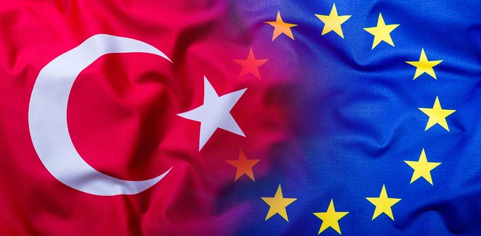
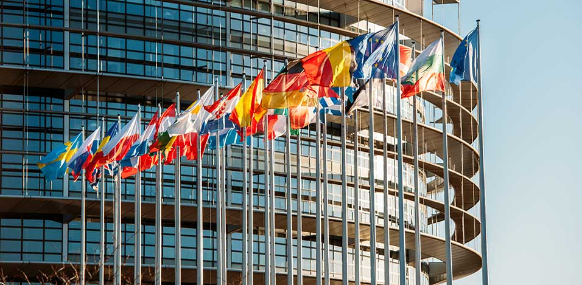
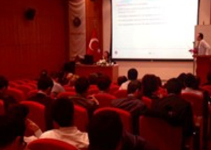
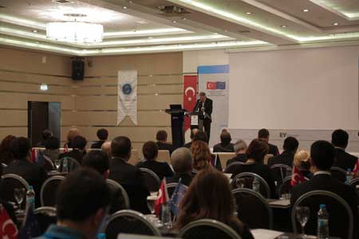

This project is co-financed by the
European Union and the
Republic of Turkey.
European Union and the
Republic of Turkey.



PURPOSE
The Europen Union Project titled “Strengthening the Capital Markets Board” which is carried out in the coverage of the 2011 “Enhanced Technical Assistance for Support Activities to Strengthen the European Integration Process Project” (ESEI) for the Financial Aids before the EU Accession is composed of the training and regulatory studies to be realized and performed by means of taking into consideration the present situation and the needs for the future by the Turkey capital markets and the capital market regulations.
It’s aimed to increase the corporate and regulatory capacity of the Capital Markets Board with the purpose of increasing the investments made through the capital markets. To achieve these results, the project consists of:
• Performance of the training activities concerning the EU regulations and applications on the areas of accounting and audit,
• Developing the administrative capacity of the Capital Markets Board by means of the realization and performance of the training activities and performance of the review of the present situation on the subject of the level of compliance with the EU regulations concerning the capital markets,
• At the same time, increasing the awareness relating to the subject in question before the public opinion and the market participants.
The Project is co-financed by the EU and Turkey and Central Finance and Contracts Unit is the Contracting Authority and the Beneficary is CMB and the E&Y is the Contractor.
The project aims at identifying gaps between EU and Turkish Capital Markets regulations and whenever possible and advisable increasing conversions towards EU standarts.
It is targeted to strengthen and to contribute the regulations of the Turkish Capital Markets.
• Performance of the training activities concerning the EU regulations and applications on the areas of accounting and audit,
• Developing the administrative capacity of the Capital Markets Board by means of the realization and performance of the training activities and performance of the review of the present situation on the subject of the level of compliance with the EU regulations concerning the capital markets,
• At the same time, increasing the awareness relating to the subject in question before the public opinion and the market participants.
The Project is co-financed by the EU and Turkey and Central Finance and Contracts Unit is the Contracting Authority and the Beneficary is CMB and the E&Y is the Contractor.
The project aims at identifying gaps between EU and Turkish Capital Markets regulations and whenever possible and advisable increasing conversions towards EU standarts.
It is targeted to strengthen and to contribute the regulations of the Turkish Capital Markets.
ACTIVITIES AND TARGETED OUTPUTS
 Component 2
The second project component relates to activities designed to increase alignment with the EU Acquis on financial services, to improve administrative capacity of CMB. Accordingly related activities involve a comparison of Turkish capital markets regulation with the relevant EU Acquis and if necessary drawing up newer drafts in order to increase the level of EU alignment. This exercise would be followed by training seminars, study visits and internship programs designed to cover Member State practices in the relative areas with the purpose of aiding CMB experts in developing appropriate implementing measures, in line with EU Member States practices and thus improving the administrative capacity of the CMB. The component covers the following main topics:
Component 2
The second project component relates to activities designed to increase alignment with the EU Acquis on financial services, to improve administrative capacity of CMB. Accordingly related activities involve a comparison of Turkish capital markets regulation with the relevant EU Acquis and if necessary drawing up newer drafts in order to increase the level of EU alignment. This exercise would be followed by training seminars, study visits and internship programs designed to cover Member State practices in the relative areas with the purpose of aiding CMB experts in developing appropriate implementing measures, in line with EU Member States practices and thus improving the administrative capacity of the CMB. The component covers the following main topics:
• Markets in Financial Instruments (MIFID)
• Undertakings for Collective Investment (UCITS)
• Alternative Investment Fund Managers (AIFM)
• Market Abuse (MAR)
• Capital Adequacy (CRD)
• Transparency requirements applicable to listed companies (TRA)
• Credit Rating Agencies (CRA)
• European Market Infrastructures Regulation (EMIR)

Component 1
The first component of the project consist of seeking support for increasing the capacity and specialization of CMB experts on EU Directives and Regulations in the area of accounting and auditing as well as EU countries’ IFRS application. In order to enforce the reliability and integrity of the financial reporting process, the aim of the training sessions is to improve the oversight capacity of the CMB on financial reports and on independent audits.
Component 2
The second project component relates to activities designed to increase alignment with the EU Acquis on financial services, to improve administrative capacity of CMB. Accordingly related activities involve a comparison of Turkish capital markets regulation with the relevant EU Acquis and if necessary drawing up newer drafts in order to increase the level of EU alignment. This exercise would be followed by training seminars, study visits and internship programs designed to cover Member State practices in the relative areas with the purpose of aiding CMB experts in developing appropriate implementing measures, in line with EU Member States practices and thus improving the administrative capacity of the CMB. The component covers the following main topics: • Markets in Financial Instruments (MIFID)
• Undertakings for Collective Investment (UCITS)
• Alternative Investment Fund Managers (AIFM)
• Market Abuse (MAR)
• Capital Adequacy (CRD)
• Transparency requirements applicable to listed companies (TRA)
• Credit Rating Agencies (CRA)
• European Market Infrastructures Regulation (EMIR)

Component 3
The third project component relates to activities designed to increase public awareness. In this regard, this component involves organization of one seminar to improve the awareness of market participants, which will be conducted with the participation of related stakeholders in the capital markets area. At beginning of the assignment an explanatory launch event and similarly at the end of the assignment a closing event will be organized.


Contact
 Phone: +90 (312) 292 90 90
Phone: +90 (312) 292 90 90
 Adress: Eskisehir Yolu 8. Km No: 156, 06530 Ankara
Adress: Eskisehir Yolu 8. Km No: 156, 06530 Ankara
Phone: +90 (312) 292 90 90
Adress: Eskisehir Yolu 8. Km No: 156, 06530 Ankara